내릴 때부터 안심하자
버스에서 내려 걷기 시작하는 정류장 가운데 사람은 많은데 CCTV·비상벨이 닿지 않는 곳을 찾아,
어디에 무엇을 놓을지, 예산 안에서 얼마나 지킬 수 있는지까지 정해 주는 AI Agent
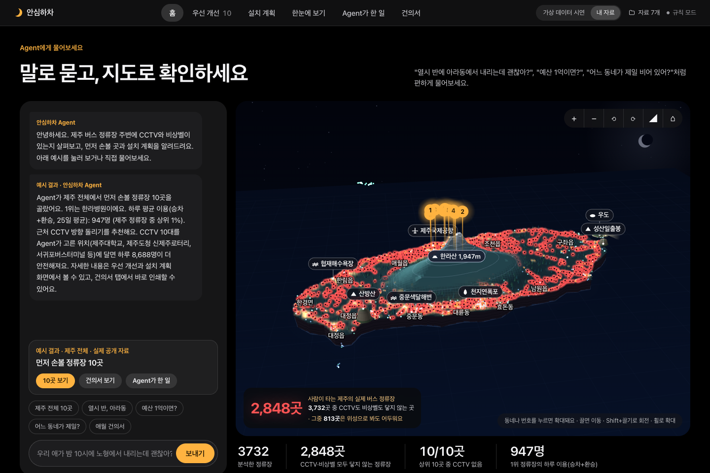
홈 화면의 Agent 작업 공간. 왼쪽에서 평소 말로 묻고 답을 받고, 오른쪽 밤의 제주 3D 지도에서 바로 확인해요. 실제 공개 자료(정류장 4,080곳, CCTV 1,134곳, 비상벨 805개, 학교 200곳, 정류장별 이용)로 분석한 결과예요.
| 핵심 데이터 | 제주빅데이터센터 3-03 버스 정류소 정보, 3-04 버스 정류소별 이용 현황 (센터 PC) 제주데이터허브 정류소별 이용자 API·시간대별 승차·CCTV, 공공데이터포털 CCTV·안전비상벨·학교·버스정류소, NASA 위성 밤 불빛 |
|---|---|
| 사용 모델 | Claude (claude-opus-5-5) 도구 호출 Agent + API 없이도 끝까지 동작하는 규칙 모드 |
| 실행 환경 | 센터 PC(Windows 11)에서 로컬 서버 + 브라우저. Python 표준 라이브러리 기반, 추가 패키지 1개 |
| 웹 데모·코드 | hosting1108.github.io/night-gap-agent · github.com/HOSTing1108/night-gap-agent |
밤에 버스에서 내린 사람은 대부분 걸어서 집으로 가요. 정류장은 밤길이 시작되는 곳이에요. 그래서 "사람이 많이 타고 내리는데 주변에 CCTV도 비상벨도 없는 정류장"은 먼저 손봐야 할 곳이에요. 정류장은 위치가 정확하고, 이용 인원이 기록되고, 담당 부서(교통·안전)가 분명해서 건의가 실제 예산으로 이어지기 쉬운 단위이기도 해요.
필요한 자료는 세 기관에 흩어져 있어요. 정류장별 이용은 제주빅데이터센터와 제주데이터허브에, CCTV·비상벨·학교 위치는 공공데이터포털에 있어요. 둘을 이으려면 아이디 체계 맞추기, 좌표계 변환, 반경 분석을 해야 해서 IT 비전문가가 직접 하기 어려워요. 게다가 "어디가 비었나"를 알아도 "그래서 어디에, 무엇을, 몇 대"라는 결정은 또 다른 계산이에요.
| 분석 주제 | 정류장 이용 수요 대비 CCTV·안전비상벨·보안등·막차의 공백 진단과 예산에 맞춘 설치 계획 (센터 3-04가 있으면 밤 하차 수요 기준) |
|---|---|
| AI 분석 목표 |
|
| 하지 않는 것 | 범죄 예측, 특정 장소를 "위험"으로 단정하는 일. 이 Agent는 위험 지도가 아니라 기반시설 공백 지도예요. |
제주데이터허브 "일별 시간대별 버스 승차 인원"(2023-12-25 ~ 2025-10-26, 37,057행)을 집계해 제주 전체의 밤 승차 흐름을 봤어요.
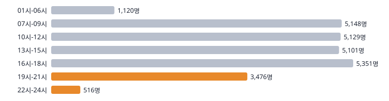
이렇게 보세요 19~24시에 하루 약 3,992명이 버스를 타요(전체의 15.4%). 22~24시만 봐도 하루 약 516명이에요. 이들 대부분은 내린 뒤 정류장에서 집까지 걸어요.
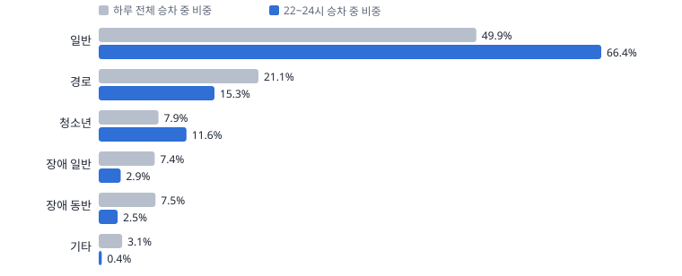
이렇게 보세요 청소년은 하루 전체 승차의 7.9%지만 22~24시 승차에서는 11.6%예요. 청소년 승차의 2.94%가 22시 이후로, 모든 유형 중 가장 늦게까지 타는 집단이에요(일반 2.66%, 경로 1.45%). 그래서 Agent는 학생 귀가 질문이면 학교 주변 정류장을 따로 봐요.
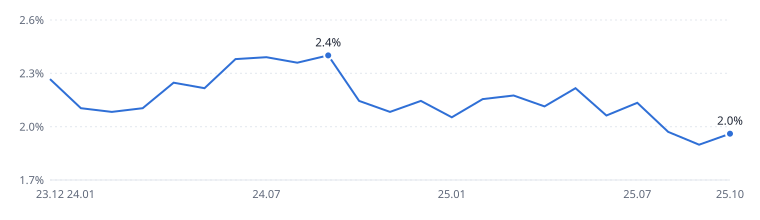
이렇게 보세요 밤 승차 비중은 여름에 높고(2024-09 2.43%) 2025년 하반기에 2.0% 안팎이에요. 요일로는 금요일이 가장 높아요(2.17%, 월요일 1.85%). 계절마다 차이는 있어도 밤 승차는 1년 내내 이어져요.
정류장 4,080곳(공공데이터포털) 중 제주데이터허브 정류장별 이용(승차+환승)과 연결된 3,732곳을 분석했어요. 기준은 CCTV 반경 100m, 비상벨 반경 200m예요.
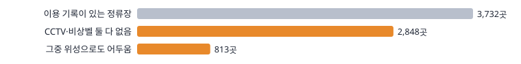
이렇게 보세요 3,732곳 중 2,848곳은 CCTV도 비상벨도 반경 안에 없어요. 그중 813곳은 NASA 위성 사진으로 봐도 밤에 어두운 곳이에요. 이 813곳에서도 하루 약 1,820명이 타고 갈아타요.
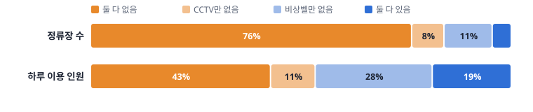
이렇게 보세요 정류장 수로는 76%가 "둘 다 없음"이고 이용 인원으로는 43%예요. 붐비는 정류장일수록 큰길에 있어 교통 CCTV가 가까이 있기 때문이에요. 그래도 하루 이용 10명 중 4명은 CCTV도 비상벨도 없는 정류장에서 타요. 둘 다 있는 정류장은 169곳(4%)뿐이에요.
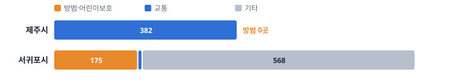
이렇게 보세요 제주시의 공개 CCTV는 모두 교통 목적이에요. Agent는 이를 알아채고 용도와 상관없이 모든 CCTV를 세요. 큰길의 교통 CCTV 방향을 정류장 쪽으로 돌리자는 제안으로도 이어져요.
| 다른 점 | 설명 |
|---|---|
| 어디에 무엇을 달지까지 | 비어 있는 곳만 찾지 않고 어디에, 무엇을, 몇 대 달지까지 정하고, 예산마다 몇 명을 지키는지 보여줘요 |
| 세 기관 자료를 한 번에 | 빅데이터센터·제주데이터허브·공공데이터포털 자료를 아이디·좌표·글자 형식까지 알아서 맞춰 하나의 정류장 지도로 엮어요 |
| 자료를 살피고 다시 확인 | 자료가 한쪽에 몰렸으면 계산 방법을 바꾸고, 기준·기간·설치 방법을 바꿔도 결과가 그대로인지 확인해요 |
| 숫자를 지어내지 않음 | 모든 숫자는 정해진 계산식으로 구해서 같은 질문에는 늘 같은 답이 나와요 |
| 센터 자료로 바로 확장 | 3-03·3-04를 올리면 밤 하차 수요와 막차 공백, 보안등 자료를 올리면 빛 공백까지 같은 화면에서 계산해요 |
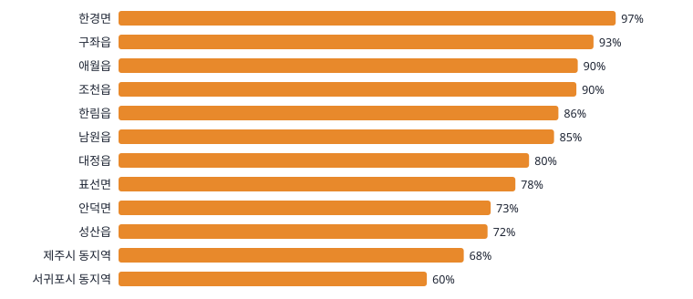
| 지역 | 정류장 | 둘 다 없음 | 그중 위성으로도 어두움 | 하루 이용 합계 | 공백 정류장의 이용 비중 |
|---|---|---|---|---|---|
| 한경면 | 189 | 184 (97%) | 70 | 509명 | 90% |
| 구좌읍 | 172 | 160 (93%) | 90 | 1,122명 | 82% |
| 애월읍 | 387 | 348 (90%) | 41 | 3,784명 | 72% |
| 조천읍 | 261 | 234 (90%) | 91 | 3,046명 | 38% |
| 제주시 동지역 | 929 | 628 (68%) | 43 | 54,749명 | 43% |
| 서귀포시 동지역 | 641 | 387 (60%) | 22 | 13,754명 | 28% |
전체 지역은 docs/results/real/by_area.csv에 있어요. 지역은 정류장 반경 700m 안 CCTV·비상벨 주소의 동·읍·면으로 정류장마다 정했어요.
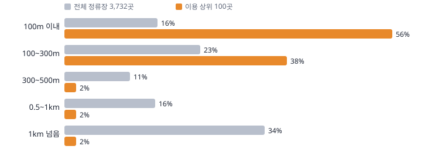
이렇게 보세요 전체 정류장의 34%는 가장 가까운 CCTV가 1km보다 멀어요. 이용 상위 100곳은 56%가 100m 안에 CCTV가 있지만, 제주시에서는 그 CCTV가 교통 단속용이에요. 읍·면 지역은 시설 자체가 없고, 시내는 시설이 있어도 방향과 목적이 달라요. 그래서 Agent는 정류장마다 고치는 방법을 다르게 알려줘요.
| 질문 | 필요한 계산 | 쓰는 데이터 |
|---|---|---|
| 어디서 많이 타고 내리나 | 정류장별 밤 시간대 하차 일평균 (센터) · 정류장별 하루 승차+환승 (허브) | 3-04 버스 정류소별 이용 현황 · 허브 정류소별 이용자 API |
| 그 정류장은 어디 있나 | 정류장 위경도, 이름으로 아이디 체계 연결 | 3-03 버스 정류소 정보 · 공공데이터포털 버스정류소현황 |
| 주변에 CCTV·비상벨이 있나 | 반경 100m CCTV, 200m 비상벨 개수와 가장 가까운 거리, 걷는 시간 | CCTV 정보 2종(포털·허브), 안전비상벨 위치 |
| 학생이 다니는 길인가 | 반경 500m 안 학교 수와 가장 가까운 학교 | 전국초중등학교위치표준데이터 (제주 200곳) |
| 어디에 몇 대를 놓을까 | 한 대로 옆 정류장까지 닿는 곳을 골라 예산별로 몇 명에게 닿는지 계산 | 위 결과 + CCTV 단가(2024년 지자체 집계) |
| 밤에 어두운가 · 누가 타나 | 위성 밤 밝기, 시간대별·이용자 유형별 승차 비중 | NASA Black Marble · 허브 시간대별 버스 승차 인원 |
run.bat)이면 브라우저가 열려요. CSV를 버튼으로 올리기만 하면 돼요.| 누가 | 결과를 어디에 쓰나 |
|---|---|
| 도민, 학부모 | 아이가 내리는 정류장의 빛 범위와 걷는 시간 확인, 결과 카드를 민원 근거로 첨부 |
| 주민자치위원, 이장 | 읍면 우선순위와 건의 문장, 예산별 설치 계획안을 주민참여예산 제안서에 첨부 |
| 공무원 | 설치 후보지 1차 선별, 기존 교통 CCTV의 방향 조정·방범 겸용 전환으로 예산 절감, 막차 연장 검토 근거 |
| 교육청, 학교 | 학교 반경 500m 안 공백 정류장 672곳 점검, 학생 귀가 동선 개선 |
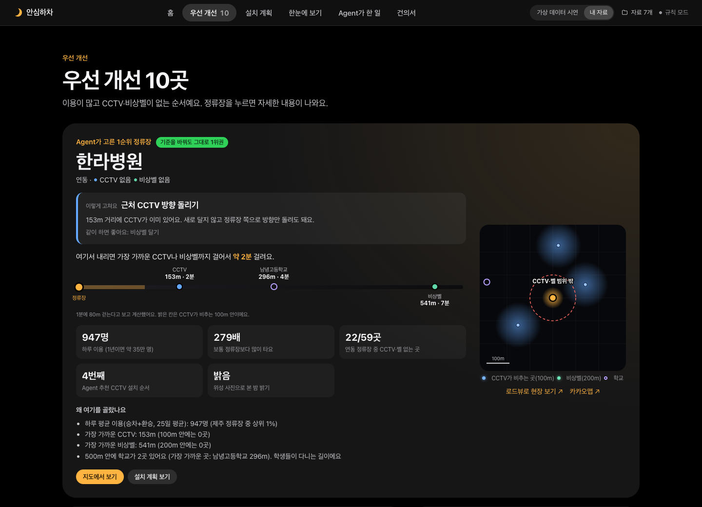
1순위 정류장 카드. 실제 자료로 Agent가 고른 1순위 한라병원(연동)이에요. 고치는 방법, 걷는 시간, 하루 이용 947명, "왜 여기를 골랐나요"가 함께 나와요. 오른쪽은 300m 안의 주변 지도예요.
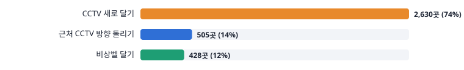
이렇게 보세요 505곳은 기존 CCTV가 기준 바로 밖(200m 안)에 있어 방향만 돌려도 돼요. 신규 설치 2,630곳, 비상벨 추가 428곳과 나눠 보면 예산을 어디에 써야 할지 분명해져요.
카드에는 이 밖에도 보통 정류장보다 몇 배 많이 타는지, 같은 동네의 비율, Agent가 추천한 설치 순서, CCTV 한 대가 함께 닿는 옆 정류장, 위성으로 본 밤 밝기, 로드뷰 링크가 나와요. 학교 자료를 넣으면 반경 500m 안 학교를 근거에 더하고, "학원", "우리 애"처럼 물으면 학교 주변 정류장만 골라 다시 순위를 매겨요(학교 주변 공백 672곳, 하루 18,738명 이용).
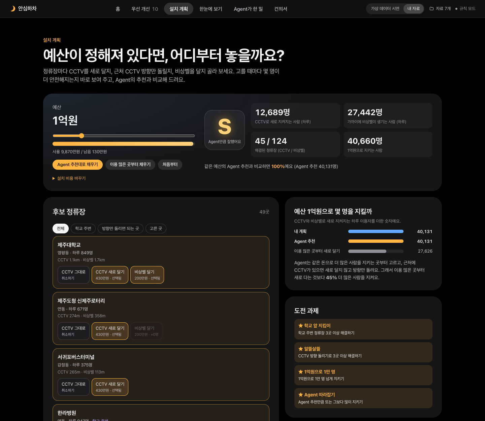
설치 계획 탭. 예산 1억원에 "Agent 추천대로 채우기"를 누른 화면이에요. 후보 49곳마다 새로 달기·방향 돌리기·비상벨 달기·그대로 두기를 고르면 비용과 "+N명", 그대로 두면 계속 불편한 사람 수가 바로 나오고, 등급과 도전 과제도 보여줘요.
| 다는 방법 | 하루 이용자 |
|---|---|
| Agent 추천 위치 (옆 정류장까지 함께) | 8,688명 |
| 이용 많은 곳부터 | 8,290명 |
| 아무 데나 (20번 평균) | 290명 |
| 외진 곳부터 | 276명 |
Agent가 고른 곳에 달면 외진 곳부터 다는 것보다 31배, 이용 많은 곳부터 다는 것보다 398명 더 많아요. 순위에는 없던 서귀포버스터미널(설치 순서 3번, 정류장 6곳에 함께 닿음)도 찾아내요.
| 항목 | 값 |
|---|---|
| 손보는 정류장 | 46곳 (방향만 돌리는 곳 19곳) |
| 새로 CCTV가 닿는 사람 (하루) | 12,689명 |
| 가까이에 비상벨이 생기는 사람 (하루) | 27,442명 |
| 이용 많은 곳부터 새로 달 때보다 | +45% |
비용: CCTV 새로 달기 430만원(2024년 지자체 CCTV 설치 비용 2,824억원 ÷ 65,296대), 방향 돌리기 50만원, 비상벨 달기 200만원. 화면에서 바꿀 수 있어요.
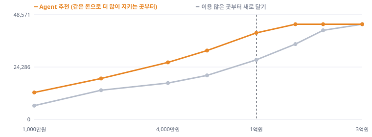
이렇게 보세요 예산이 얼마든 Agent 추천(주황)이 이용 많은 곳부터 다는 방법(회색)보다 위에 있어요. 같은 돈으로 더 많은 사람을 지키는 곳부터 고르고, 근처에 CCTV가 있으면 새로 달지 않고 방향만 돌리기 때문이에요.
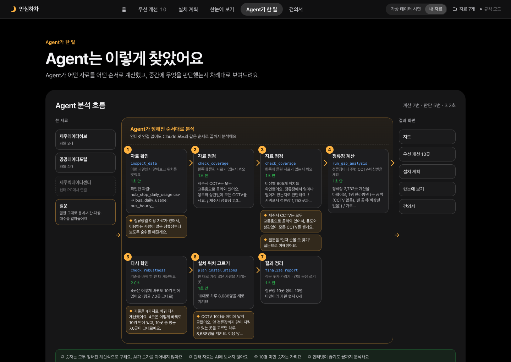
Agent가 한 일 탭. 쓴 자료, Agent가 실행한 도구 7개의 순서와 걸린 시간, 중간 판단(주황 마름모), 결과 화면 5개가 한 그림에 나와요. 아래 띠는 안전장치 4가지예요.
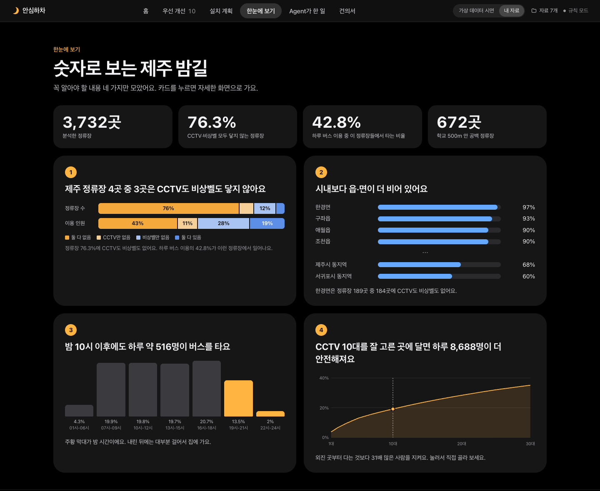
한눈에 보기 탭. 큰 숫자 4개와 "결론 한 문장 + 그림 하나" 카드 4장만 담았어요. 카드를 누르면 자세한 화면으로 가요.
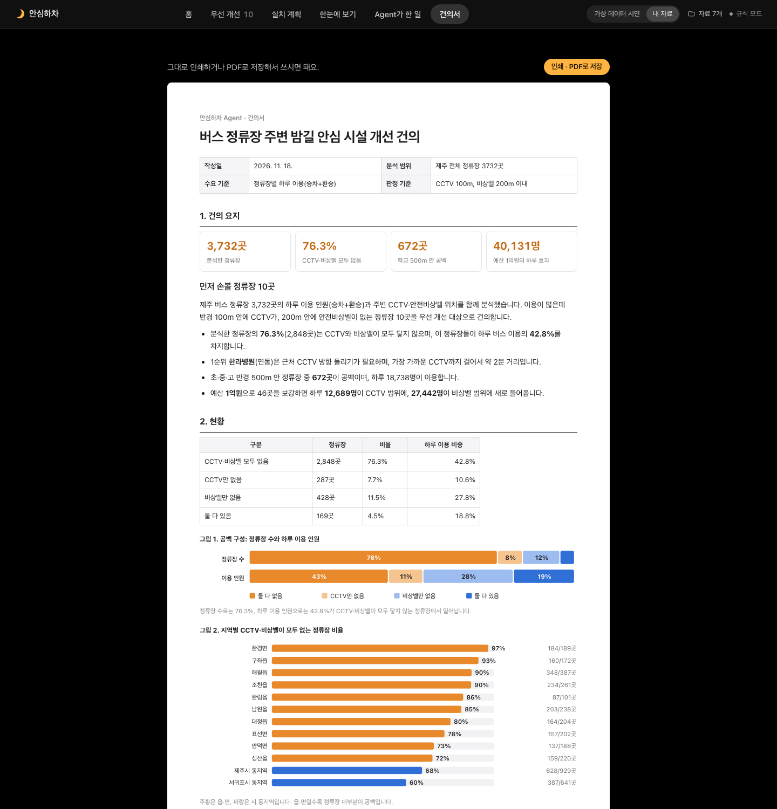
건의서 탭. 핵심 숫자 4칸, 현황과 그림, 우선 개선 표, 정류장별 주변 지도, 설치 계획안, 기대 효과까지 10개 항목으로 만들어요.
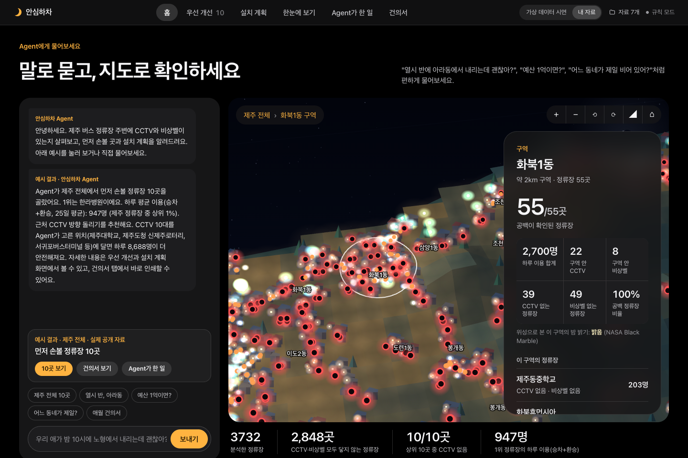
홈: Agent 작업 공간에서 구역 확대. 오른쪽 지도에서 제주 시내 동네를 누른 화면이에요. 번호는 우선 개선 순위, 오른쪽에 구역의 공백 정류장 수와 비율, 하루 이용 합계, 위성 밤 밝기가 나와요.
역할: 도민의 질문을 받아 필요한 자료를 확인하고, 자료를 점검하고, 정류장 공백을 계산하고, 기준을 바꿔 다시 확인한 뒤, 예산에 맞춰 어디에 무엇을 달지까지 정해 주는 도민의 분석 도우미예요.
목표: IT 비전문가가 질문 하나로 "어디에, 무엇을, 몇 대"까지 건의서에 바로 쓸 수 있는 결과를 얻게 하는 것이에요.
look_up_place), 시간대(밤 10시 → 22~23시), 대상(학생 → 학교 주변), 설치 대수(CCTV 5대)를 읽어요inspect_dataCSV를 열어 종류를 판별하고, 좌표를 변환하고, 같은 종류 파일을 합치고, 필수 자료가 빠졌으면 무엇이 없는지 알려요check_coverage어느 시의 CCTV가 한 용도에 몰려 있으면 용도와 상관없이 모든 CCTV를 세도록 바꿔요. 비상벨 위치도 함께 살펴요run_gap_analysis수요 백분위 × 공백 가중합으로 점수. 학생 질문이면 학교 반경 500m 안 정류장만, 수요가 적으면 시간대를 넓혀 다시 계산check_robustnessCCTV 50·150m, 비상벨 100·300m, 시간대 ±1시간으로 다시 계산해 상위 10곳이 몇 번 남는지 세고 카드에 붙여요plan_installations요청한 대수만큼 옆 정류장까지 가장 많은 사람을 지키는 곳을 차례로 고르고, 이용 많은 곳부터·외진 곳부터·아무 데나와 비교해요finalize_report10명 미만 숫자를 가리고, 고치는 방법·근거 카드·건의 문장·지역 집계·설치 계획 자료를 만들어요| Claude 모드 (기본) | Anthropic Claude claude-opus-5-5가 다음에 쓸 도구를 고르고, 결과를 읽고 다시 판단하고, 마지막 설명과 건의 문장을 써요. Messages API 도구 호출 루프(최대 14단계), 도구 스키마 strict 검증. |
|---|---|
| 규칙 모드 | API 키가 없거나 인터넷이 막히면 같은 도구를 같은 순서로 실행해요. 중간에 Claude 연결이 끊겨도 규칙 모드로 이어서 끝까지 가요. |
| 숫자의 출처 | 모든 숫자는 정해진 파이썬 계산식으로 구해요. Claude는 숫자를 지어내지 않고, 계산 결과에 있는 숫자만 써요. |
| 상황 | Agent의 판단 |
|---|---|
| 3-04가 없음 | "제주데이터허브의 정류장별 이용 자료를 찾았어요. 이용이 많은 정류장의 공백을 먼저 보도록 순위를 매길게요." |
| 공개 CCTV 점검 | 제주시 공개 CCTV가 모두 교통용인 것을 알아채고, 용도와 상관없이 모든 CCTV를 세도록 바꿈 |
| "학원 끝나고 우리 애가…" | 학생 귀가 질문으로 읽고 학교 반경 500m 안 정류장만 골라 순위를 다시 매김 |
| "CCTV 5대 놓는다면" | 5대를 달 곳을 고르고, 이용 많은 곳부터·외진 곳부터 달 때와 비교해 설명에 넣음 |
| Tool | 하는 일 | Claude에 돌려주는 것 |
|---|---|---|
inspect_data | CSV 판별(컬럼 규칙), 인코딩 판별, TM→WGS84 변환, 제주 범위 밖 제거, 같은 종류 파일 합치기(약 10m 안 같은 시설은 하나로) | 파일별 종류·행 수·판별 근거, 빠진 필수 자료, 섬 전체 밤 승차 비중 |
check_coverage | 시별·목적별·장소 유형별 분포 점검 | 분포와 점검 결과(NO_CRIME_CCTV, ONE_PLACE_TYPE, SPARSE) |
run_gap_analysis | 이용 자료 연결(아이디 → 이름), 반경 안 시설 수와 가장 가까운 거리, 막차, 점수, 학교 근처만 보기, 결과 점검 | 상위 10곳 요약(10명 미만 가림), 이름 연결 비율, 점검 내용 |
check_robustness | 반경·시간대를 바꿔 4~6번 다시 계산하고 상위 10곳 유지 횟수 비교 | 조건별 유지 수, 평균, 모든 조건에서 남은 곳 |
plan_installations | 한 대로 옆 정류장까지 가장 많은 사람을 지키는 곳을 차례로 고름(CCTV·비상벨), 다른 방법과 비교 | 설치 순서, 지키는 이용자, 비교 결과 |
look_up_place | 지명이 들어간 정류장과 주변 정류장 조회 | 맞는 정류장, 주변 순위 |
finalize_report | 반출 기준 적용, 양방향 정류장 합치기, 고치는 방법, 근거 카드, 건의 문장, 지역 집계, 설치 계획 후보 | 카드 수, 가린 값 수 |
| Claude API | 도구 선택, 판단, 설명 작성 | 외부 접속: api.anthropic.com 한 곳 |
| 상황 | Agent가 스스로 하는 일 | 사용자에게 맡기는 일 |
|---|---|---|
| 올린 파일 종류가 불분명 | 컬럼 이름과 값으로 판별하고 근거 표시 | 판별되지 않은 파일은 무엇인지 알려 다시 올리게 함 |
| 좌표가 TM(미터) | EPSG:5174·5181·5186 중 제주 안에 떨어지는 좌표계로 자동 변환 | 없음 |
| 이용 자료와 정류장 아이디 체계가 다름 | 정류장 이름(방면 표기 정리)으로 연결, 연결 비율을 화면에 표시 | 없음 |
| 시간대별 하차(3-04)가 없음 | 하루 이용, 그것도 없으면 시설 공백만으로 순위를 매기고 그렇게 적음 | 센터 자료를 올릴지 |
| 어떤 시의 CCTV가 한 목적에 몰림 | 용도와 상관없이 모든 CCTV를 세도록 전환, 이유 설명 | 추가 CCTV 목록을 넣을지 |
| 학생·자녀 귀가 질문 | 학교 반경 500m 안 정류장만 골라 순위, 근거에 가까운 학교 표시 | 없음 |
| 설치 대수·예산이 정해짐 | 가장 많은 사람을 지키는 위치 계산, 가까운 CCTV가 있으면 방향 돌리기 추천 | 비용 바꾸기, 직접 고르기 |
| 밤 수요가 적어 순위가 불안정 | 시간대 20~23시로 확장, 승차 기록으로 보정해 재계산 | 없음 |
| 상위 10곳이 한 지역에 몰림 | 몰림 비율을 알림 | 지역을 정해 다시 물어볼지 |
| 결과에 10 미만 값 | "10명 미만"으로 가림 | 없음 |
| 데이터명 | 활용 항목 | 용도 | 반출 |
|---|---|---|---|
| 3-03 버스 정류소 정보 | bus_station_id, bus_station_name, latitude, longitude, base_date | 분석 단위(정류장)의 위치 | 가능 |
| 3-04 버스 정류소별 이용 현황 | base_date, base_hour, bus_station_id, get_on_off_type, user_count | 밤 하차 수요, 마지막 이용 시각 | 가능 |
| 데이터명 | 출처 | 기준 | 규모 | 쓰는 곳 |
|---|---|---|---|---|
| 버스정류소현황 | 공공데이터포털 15010850 | 2022-11-01 | 4,080곳 | 3-03이 없을 때 정류장 위치 |
| 일일 정류소별 버스 이용자 정보 | 제주데이터허브 API 613 (제공 제주빅데이터센터) | 2025-10 (25일) | 정류장 3,646곳 | 3-04가 없을 때 정류장별 수요(승차+환승) |
| 일별 시간대별 버스 승차 인원 | 제주데이터허브 512 | 2023-12-25 ~ 2025-10-26 | 37,057행 | 밤 시간대·이용자 유형 비중(섬 전체) |
| CCTV 정보 | 공공데이터포털 15013094 (전국CCTV표준데이터) | 2025-11-05 | 1,043곳 | CCTV 공백 |
| CCTV 정보 | 제주데이터허브 846 | 2022-12 ~ 2024-07 | 479행 (새로 91곳 추가) | CCTV 공백 보강 |
| 안전비상벨 위치 | 공공데이터포털 15028206 | 2025-10-31 | 811개 (좌표 오류 6개 제외) | 벨 공백 |
| 초중등학교 위치 | 공공데이터포털 15021148 (전국초중등학교위치표준데이터) | 2026-10-01 | 제주 200곳 (초119·중47·고34) | 학교 주변 정류장, 학생 귀가 질문 |
| 밤 불빛 위성 영상 | NASA Black Marble (GIBS, CC0) | 연간 합성 | 제주 전역 | 3D 지도 배경, 정류장 밤 밝기 |
| 보안등 위치 (확장) | 공공데이터포털 15017320 전국보안등정보표준데이터 | — | — | 올리면 빛 공백 자동 계산 |
공공데이터포털·제주데이터허브 자료는 각 이용허락범위에 따라 출처를 밝혀 써요. 허브 API 키는 config.env에만 두고 제출물에 넣지 않아요.
data/public에 넣어 두고, 허브 API는 tools/fetch_hub_usage.py로 날짜별로 받아 이어 붙여요(정류장 이름이 빠진 날은 다른 날의 이름으로 채움).질문 "제주 전체에서 밤길 공백이 큰 정류장 10곳 알려줘"를 실제 공개 자료로 실행한 결과예요(규칙 모드, 약 0.9초). 하루 이용은 제주데이터허브 정류장별 승차+환승이에요. python tools/build_plan.py로 이 쪽의 숫자를 다시 만들 수 있어요.
| 순위 | 정류장 | 동 | 고치는 방법 | 하루 이용 | 가장 가까운 CCTV | 가장 가까운 비상벨 | 기준 바꿔도 |
|---|---|---|---|---|---|---|---|
| 1 | 한라병원 | 연동 | 방향 돌리기 | 947명 | 153m | 541m | 4/4 |
| 2 | 제주대학교 | 영평동 | 새로 달기 | 849명 | 1,084m | 1,659m | 4/4 |
| 3 | 제주도청 신제주로터리 | 연동 | 새로 달기 | 671명 | 274m | 358m | 4/4 |
| 4 | 제주여자중고등학교(광양방면) | 아라2동 | 새로 달기 | 429명 | 595m | 273m | 3/4 |
| 5 | 부영아파트 | 노형동 | 새로 달기 | 371명 | 222m | 354m | 4/4 |
| 6 | 아라동주민센터 | 아라1동 | 방향 돌리기 | 355명 | 138m | 1,233m | 3/4 |
| 7 | 아라주공아파트/아라스위첸아파트 | 아라1동 | 방향 돌리기 | 343명 | 114m | 1,539m | 2/4 |
| 8 | 고산동산(아라방면) / 제주4.3 트라우마센터 | 이도2동 | 방향 돌리기 | 326명 | 185m | 246m | 1/4 |
| 9 | 시민회관 | 이도1동 | 새로 달기 | 299명 | 275m | 395m | 2/4 |
| 10 | 용천마을 | 삼도1동 | 방향 돌리기 | 262명 | 116m | 529m | 1/4 |
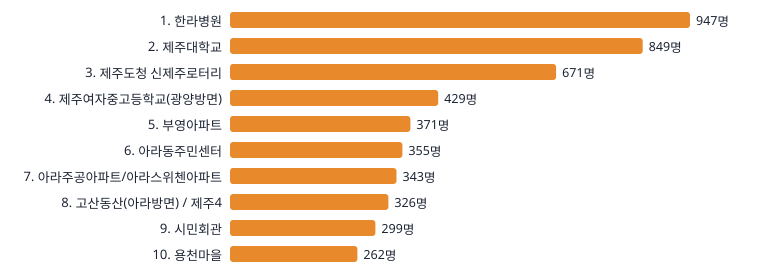
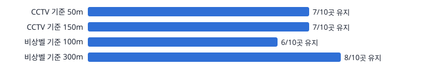
이렇게 보세요 상위 10곳 중 평균 7.0곳이 그대로 남아요. 건의서에는 "기준 바꿔도 n/4"를 함께 적어 얼마나 믿을 만한지 보여줘요.
| 항목 | 결과 |
|---|---|
| 정류장 위치 | 4,080곳 중 4,079곳 사용 (좌표 오류 1곳 제외) |
| 정류장별 이용 연결 | 이름 정규화로 자동 연결, 이용 인원의 92.4% |
| CCTV | 두 자료 합쳐 1,134곳 (같은 위치 중복 합침) |
| 비상벨 | 805개 (좌표 오류 6개 자동 제외) |
| 학교 | 전국 12,004곳 중 제주 200곳 |
| 시간대별 승차 | 37,057행, 최근 90일 집계 |
| 검증 | 방법 | 결과 |
|---|---|---|
| 정답이 있는 가상 자료 | 수요가 많고 CCTV가 적은 "가상신도시"를 심고 상위권에 오는지 확인 | 1위 |
| 순위 안정성 (기준) | CCTV 50·150m, 비상벨 100·300m로 다시 계산 | 평균 7.0/10 유지, 4곳은 모두 유지 |
| 순위 안정성 (기간) | 하루치(10/14) · 13일치 · 25일치 상위 10곳 비교 | 하루치와 9/10, 13일치와 10/10 일치 |
| 설치 위치 | CCTV 10대를 이용 많은 곳부터·외진 곳부터·아무 데나(20번)와 비교, 작은 예제로 옆 정류장 계산 확인 | 외진 곳부터의 31배, 항상 이용 많은 곳부터보다 같거나 많음 |
| 질문 이해 | 평소 말투 질문 40개(지역·시간·대상·대수)를 정답과 대조 | 40/40 |
| 좌표 변환 | 3개 좌표계, 제주 3지점 왕복 변환 | 오차 1cm 미만 |
| 반출 기준 · 원자료 미전송 | 10 미만 값 가림, 실제 SDK에 모의 응답을 연결해 보낸 내용 검사 | 통과 |
| Claude 실제 실행 | claude-opus-5-5로 시나리오 3개. 수요 부족 → 재계산, CCTV 목적 쏠림 → 계산 방식 전환을 스스로 수행 | 통과 (질문당 29~33초) |
| 재현 | python -m unittest discover tests | 22개 통과 |
| 구분 | 한계 | 대응과 확인 |
|---|---|---|
| 이용 자료 | 공개된 정류장별 이용은 25일치, 하루 이용(승차+환승) 기준이에요 | 기간을 늘려도 상위 10곳이 같았어요(위 표). 센터 3-04를 넣으면 밤 하차·막차 기준으로 바뀌어요 |
| CCTV·비상벨 | 공개 위치 자료(CCTV 1,134곳, 비상벨은 대부분 화장실) 기준이라 실제 공백은 더 작을 수 있어요 | 용도와 상관없이 모든 CCTV를 세고, 결과는 현장 확인이 필요한 1차 후보로 안내해요 |
| 가로등 | 제주 보안등 위치 자료가 없어 가로등 공백은 계산하지 않았어요 | 파일을 넣으면 바로 계산해요. 위성 밤 밝기는 참고로만 쓰고 순위에는 넣지 않아요 |
| 정류장 연결 | 아이디 체계가 달라 이름으로 연결했어요(이용 인원의 92.4%) | 연결 비율을 화면에 보여줘요. 센터 3-03·3-04는 같은 아이디예요 |
| 비용과 효과 | 방향 돌리기·비상벨 단가는 예시이고, 효과 합계는 CCTV·비상벨 효과를 더한 값이에요 | 화면에서 단가를 바꾸면 다시 계산해요. 시설별 효과도 따로 보여줘요 |
| 센터 자료 | 센터 PC의 실제 3-03·3-04로는 아직 돌려 보지 않았어요 | 데이터 명세서 형식의 가상 자료로 같은 경로를 검증했어요 |
자세한 내용은 결과 설명자료 6절 「결과 근거와 한계」에 있어요.
| 구성 | 파일 | 내용 |
|---|---|---|
| Agent | app/agent.py | System Prompt, 도구 정의, Claude 도구 호출 루프, 규칙 모드, 질문 해석(지역·시간·대상·대수), 결과 검증, 도구별 실행 시간 기록 |
| 분석 도구 | app/tools.py, app/geo.py | 자료 판별, 이름 연결, 공백 계산, 고치는 방법, 설치 위치 고르기와 비교, 지역 집계, 반출 기준, 좌표 변환, 빠른 위치 검색 |
| 화면 | app/server.py, app/static/ | 로컬 서버, 밤의 제주 3D 지도, 1순위 카드·주변 지도, 설치 계획, Agent 분석 흐름 그림, 그림이 든 건의서 |
| 자료 수집 | tools/fetch_hub_usage.py | 제주데이터허브 정류소별 이용 API를 날짜별로 받아 합계 생성 (키는 화면·로그에 쓰지 않음) |
| 검증·문서 | tests/, tools/make_real_stats.py, tools/build_plan.py | 자동 테스트와 질문 시험 40개, 기획서 통계·차트·숫자 재현 |
| 항목 | 내용 |
|---|---|
| 센터 PC | Windows 11, Intel Core i7-8700, GTX 1060, RAM 32GB, Chrome·Edge. GPU는 쓰지 않아요. |
| 설치할 프로그램 | Python 3.10 이상, anthropic Python SDK (MIT, Claude 연결용). 이 외에는 설치할 것이 없어요. |
| 실행 | run.bat 더블클릭 → http://127.0.0.1:8765. 이 PC 안에서만 접속돼요. |
| API 키 | config.env에 ANTHROPIC_API_KEY 입력(센터 담당자 설정). 제출물에는 키를 넣지 않아요. |
| 저장 위치 | 올린 CSV는 data/input/에만 저장돼요. 퇴실 시 이 폴더만 비우면 돼요. |
| 서비스 | 주소 | 없을 때 |
|---|---|---|
| Anthropic Claude API | https://api.anthropic.com | 규칙 모드로 자동 전환, 모든 기능 동작 |
| 제주데이터허브 API (자료 수집 때만) | https://open.jejudatahub.net | 받아 둔 CSV로 동작. 센터에서는 3-04를 쓰므로 필요 없음 |
| 지도 서비스 | 사용하지 않음 (좌표로 직접 그림, 위성 영상은 파일로 포함) | — |
| 웹 데모 (선택) | GitHub Pages + Pyodide(cdn.jsdelivr.net)로 같은 Agent 코드를 브라우저에서 실행 | 센터 PC 실행에는 필요 없음 |
| 단계 | 할 일 |
|---|---|
| 1. 설치 | 제출 zip을 풀고 run.bat 실행 (Python과 SDK 1개만 필요) |
| 2. 센터 자료 연결 | 3-03·3-04를 화면에서 올리면 밤 하차 기준 순위와 막차 공백을 자동 계산 |
| 3. 반출 | 10 미만 값을 가린 CSV·지도 PNG·건의서 PDF를 반출 심사에 제출 |